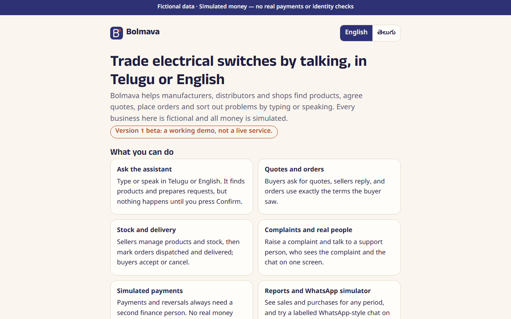
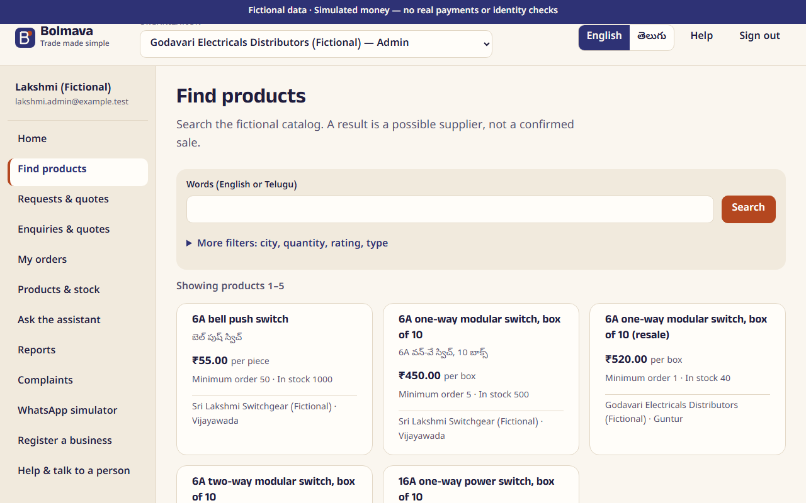
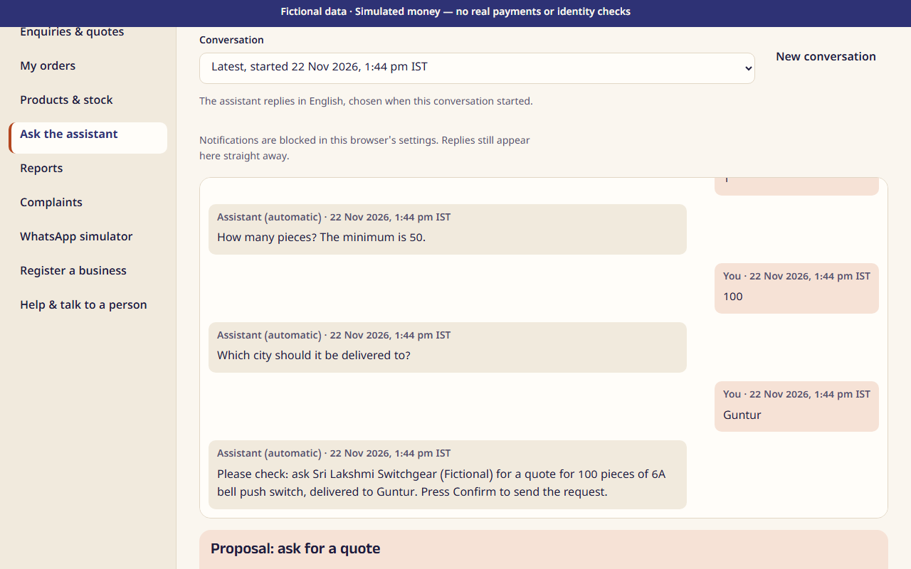
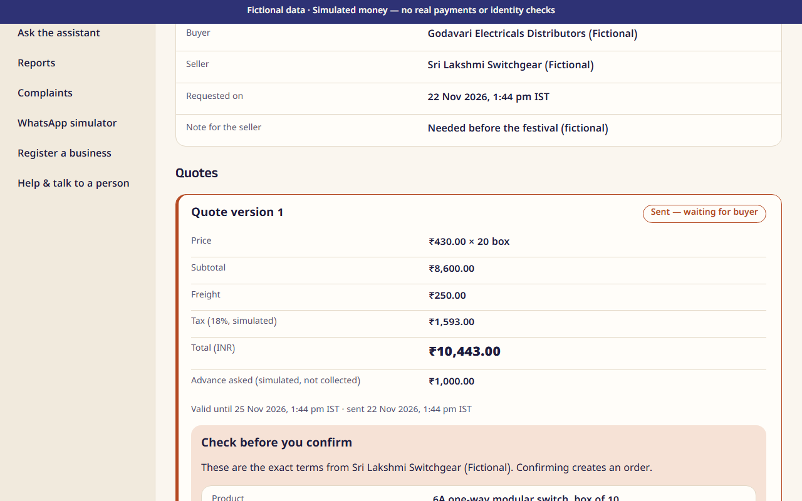
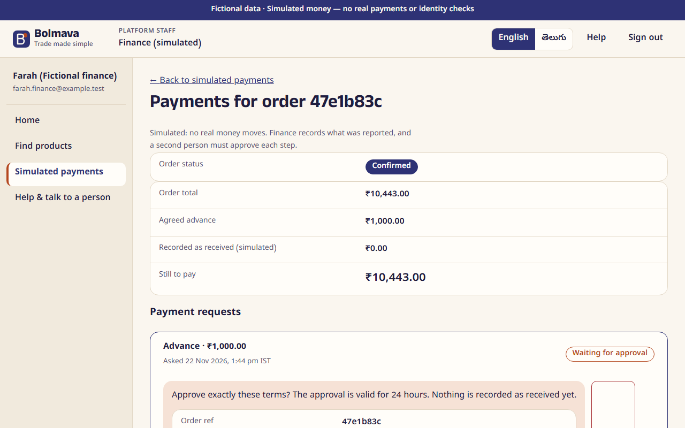
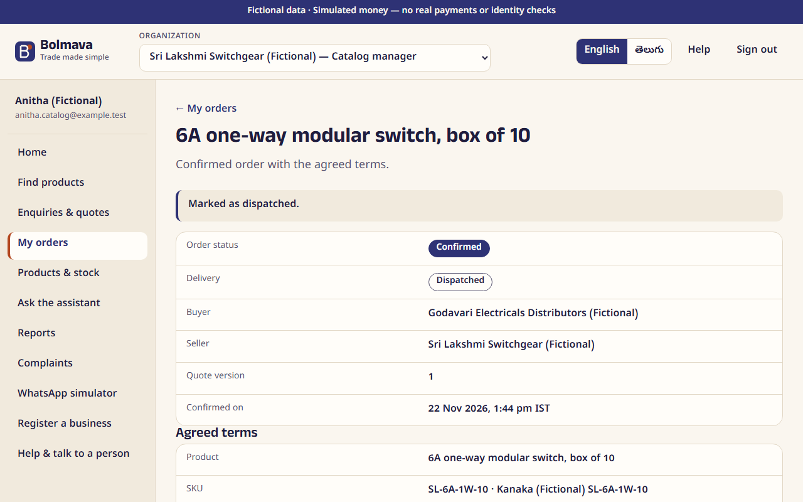
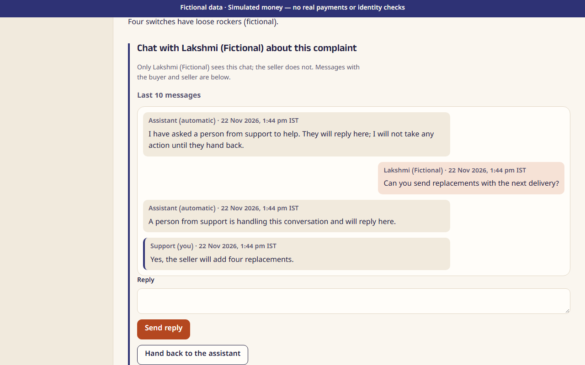
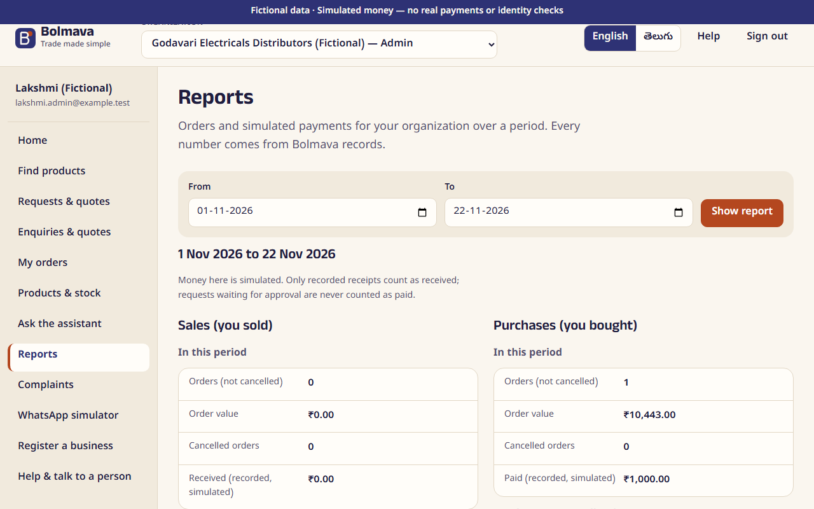
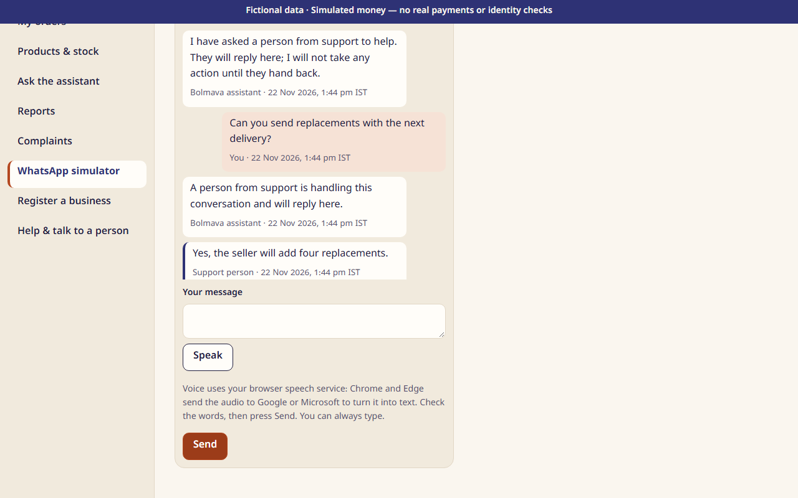
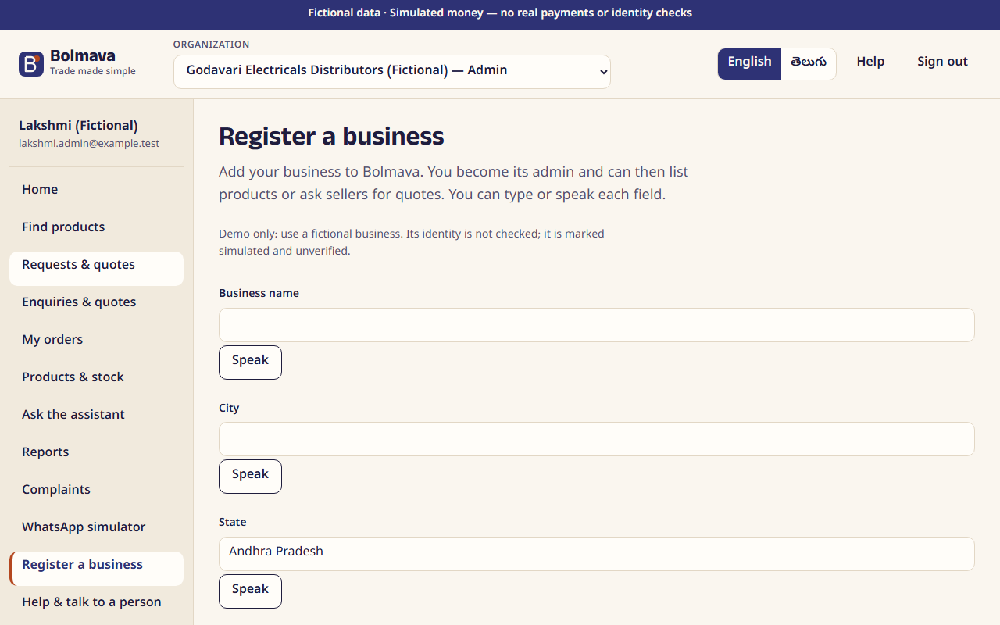

Bolmava helps manufacturers, distributors and shops find products, agree quotes, place orders and sort out problems by typing or speaking. It keeps every promise in the database, not in the chat: nothing is bought until a person presses Confirm, and money needs two people.
Version 1.0.0 beta: a working demo, not a live service
Type or speak in Telugu or English. It finds products and prepares a quote request or an order, but nothing happens until you press Confirm.
Buyers ask, sellers quote, and an order is placed on exactly the version and total the buyer saw. Retrying after a lost connection never orders twice.
Sellers manage products and stock. Orders move from dispatched to delivered to accepted; cancelling before dispatch puts the stock back exactly once.
Customers raise complaints and talk to a support person, who sees the complaint and the chat on one screen. Internal notes never reach the customer.
Advances, receipts and reversals always need a second finance person to approve the exact terms. No real money moves anywhere.
Sales and purchases for any period, a free browser voice button, and a clearly labelled WhatsApp-style chat on the same records.
The original 14-step story, run through the real screens, server and database. An automated browser test walks through steps 2 to 13 on every change.
| # | Step | In v1 beta |
|---|---|---|
| 1 | A manufacturer registers (by voice) | Yes: Register a business, each field typed or spoken (demo people; real accounts come later) |
| 2 | The manufacturer lists a product | Yes: products, prices, delivery cities and stock |
| 3–4 | A distributor asks; the assistant matches the manufacturer | Yes: "find 20 amp two way switch" in the chat, typed or spoken |
| 5 | The distributor receives a quotation | Yes |
| 6 | They negotiate | Yes: reject version 1, receive a cheaper version 2 |
| 7 | The buyer confirms a simulated order | Yes: exact terms shown first |
| 8 | Finance reviews a simulated advance | Yes: approved by a second person, then recorded |
| 9 | The order moves to delivery | Yes |
| 10 | The buyer raises a quality complaint | Yes |
| 11 | The assistant hands over to human support | Yes: the assistant pauses until the person hands back |
| 12 | The support person updates the complaint | Yes: complaint and chat on one screen |
| 13 | The seller asks the assistant for a report | Yes: in Telugu or English, matching the report screen |
| 14 | The seller switches to WhatsApp or the portal | Portal: yes · WhatsApp: labelled simulator only |










Python, FastAPI, Pydantic, SQLAlchemy 2, Alembic migrations, PostgreSQL 16. The server decides every rule: permissions, stock, totals in integer paise, quote versions and confirmation.
React 19, Vite, TypeScript, React Router. Telugu and English throughout, keyboard and screen-reader friendly, and laid out for a 360 px phone.
A rule-based assistant that needs no AI service or API key. It reads Telugu and English, including spoken forms, and only ever proposes actions.
PostgreSQL LISTEN/NOTIFY with a server-sent event stream for chat replies; the browser's free Web Speech API for voice input.
124 backend tests on real PostgreSQL, 10 regression checks from independent reviews, 27 unit tests and 57 browser tests that drive the real app.
GitHub Actions run every check on each change; an advisory, AI-assisted Telugu wording review uses free Gemini models, with a fluent human review still to come.
The assistant can propose, never buy. Orders bind to the exact quote version and total the buyer saw.
Whoever asks for a payment or a reversal can never approve it. Balances come only from recorded events.
Orders, quote requests, messages, stock changes and registrations carry retry keys, so a lost connection never duplicates them.
A support person sees a customer's chat only while handling it, and internal notes never reach buyers or sellers.
You need Python 3.13, PostgreSQL 16 and Node 24. Everything is free and local; no API keys are required.
# database: create role bolmava and databases bolmava, bolmava_test (see backend/README.md)
cd backend
py -3.13 -m venv .venv
.\.venv\Scripts\Activate.ps1
pip install -r requirements.txt -r requirements-dev.txt
copy .env.example .env # set LOCAL_AUTH_SECRET to any long random string
alembic upgrade head
python -m app.seed
uvicorn app.main:app --port 8000
# in another terminal
cd frontend
npm ci
npm run dev # open http://localhost:5173Pick a demo person on the front page. Try Lakshmi (buyer), Anitha (seller), Sanjay (support) and Farah or Arjun (finance) to see each side.
Fictional people and businesses, simulated money, and a demo sign-in without passwords. Real accounts, hosting and payments are later, separately approved steps.
Browser voice works in Chrome and Edge on localhost or https, and needs internet. The browser can mishear, so words appear in the box to check before sending.
All 634 interface strings have Telugu, reviewed with AI assistance. A fluent human review is the next language step.
Secure sign-in, an online staging server, stored evidence files, production voice and phone, real WhatsApp and, only after a separate decision, real payments.